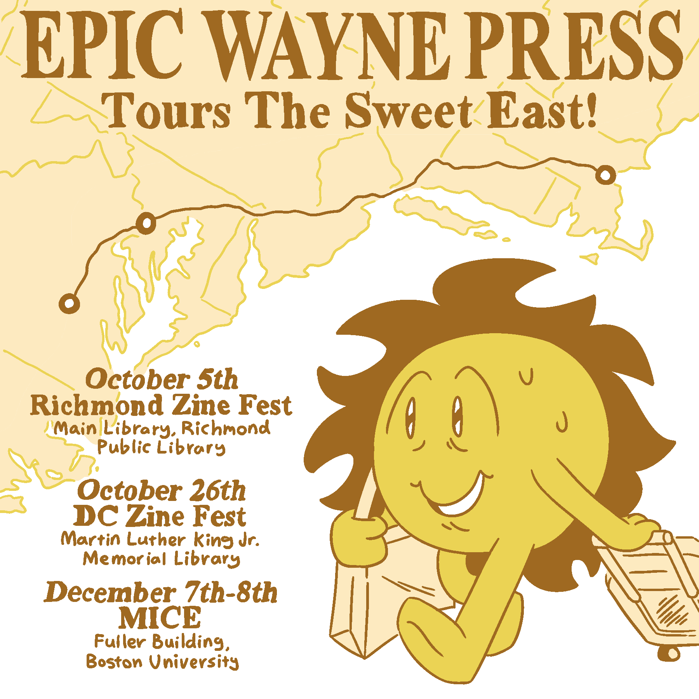

Teo Suzuki has exhibited at the following shows as a representative of Epic Wayne Press:
Brooklyn Independent Comics Showcase 2024
Toronto Comic Arts Festival 2024
Richmond Zine Fest 2024
DC Zine Fest 2024
Massachusetts Independent Comics Expo 2024
Jersey Art Book Fair 2025
Montclair Zine Fest 2025
Comic Arts Maine Portland 2025
Brooklyn Independent Comics Showcase 2025
Montreal Comic Arts Festival 2025
Toronto Comic Arts Festival 2025
Small Press Expo 2025
Pictobeach 2025
Comic Arts Maine Portland 2026
Brooklyn Independent Comics Showcase 2026
Montreal Comic Arts Festival 2026
Teo Suzuki has exhibited at the following shows as an individual artist:
A2CAF: Small + Indie Press 2025
Pittsburgh Indie Expo 2026
Toronto Comic Arts Festival 2026